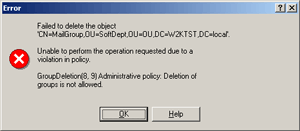

Policy scripts can generate run-time error messages that notify an administrator when the corporate policy fails. To generate error messages, you can use the SetPolicyComplianceInfo method of the IEDSPolicyComplianceRequest interface or the Raise method of the Err object of VBScript.
Whenever possible, use the SetPolicyComplianceInfo method because it does not result in the script termination.
Messages Returned by SetPolicyComplianceInfo Method
For information about this method, refer to IEDSPolicyComplianceRequest.
For examples of the policy scripts that use the SetPolicyComplianceInfo
method, please refer to Checking
Property Values.
Messages Returned by Raise Method
The Err object is an intrinsic object with global scope - there is no need to create an instance of it in your code. The Raise method of the Err object allows you to return custom error messages.
Syntax
Err.Raise <Error Code> <Error Source> <Error Description>
- Error Code
- [in] A Long integer subtype that identifies the nature of the error. VBScript errors (both VBScript-defined and user-defined errors) are in the range 0-65535
- Error Source
- [in] A string expression naming the object or application that originally generated the error
- Error Description
- [in] A string expression describing the error
Sample Code
The following code snippet shows how to use the Err object.
[VBScript] Sub onPreDelete(Request) Dim strObjClass Const strError = "Deletion of groups is not allowed." strObjClass = CStr(Request.Class) ' Check the object class If StrComp(strObjClass, "group", 1) = 0 Then ' Raise an exception Err.Raise 1, "Administrative policy", strError End If End Sub
[PowerShell] function onPreDelete($Request) { $Error = "Deletion of groups is not allowed." $ObjClass = [string]$Request.Class # Check the object class If($ObjClass -eq "group") { # Raise an exception throw "Administrative policy: $Error" } }
When you create and apply a Policy Object based on the policy script above, Active Roles does not allow the deletion of groups that reside in the folder to which the Policy Object is linked, presenting you with the error message box like follows:

Note:
If a pre-event handler raises an exception, the execution
of the request is terminated and the error is returned to the client.
If a post-event handler raises an exception, the execution of the request
is not terminated. An error message is recorded into the EDM Server event
log.
 Related Topics
Related Topics{kind=link}